Club STFU
A venue as an instrument.
Overview
A complete club visual language connecting LED integration, projection, lighting atmosphere, branded content, and live performance across the room.
The venue needed more than screens playing loops. Its different surfaces had to feel related, remain flexible across programming, and be operable in the unpredictable conditions of a live nightlife environment.
I completed LED-wall integration and Novastar configuration, refined the venue's visual architecture, built content libraries, established playback workflows, and continued supporting the system through troubleshooting and live VJ performance.
The room became a responsive visual instrument: one identity expressed through multiple surfaces, with enough structure for reliability and enough freedom for live improvisation.
A visual identity with depth
Screens, reflective surfaces, furniture, and architectural details share a saturated but controlled visual language.


The room at work
The curated record — installs, looks, and the venue running. Click any frame to view it full size.
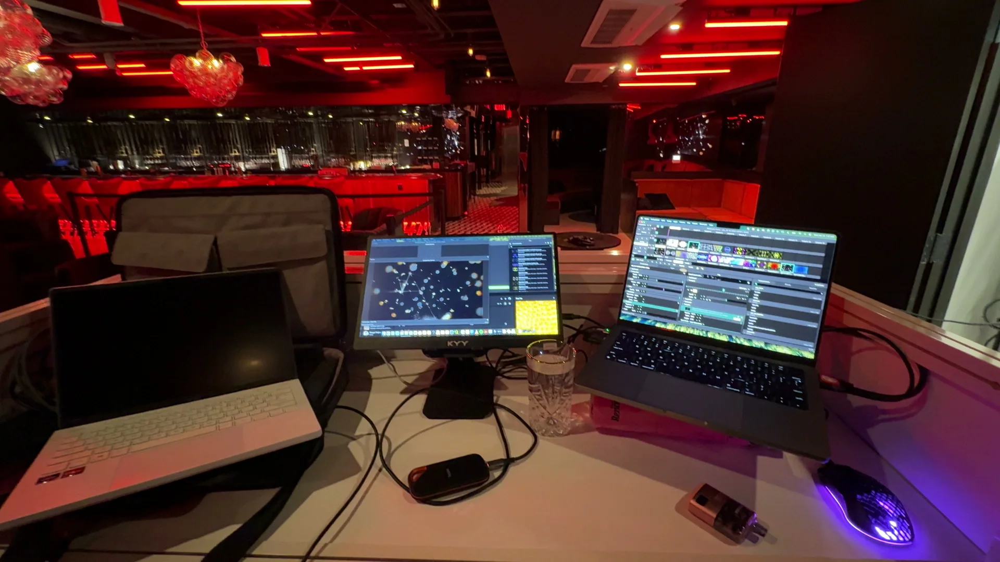
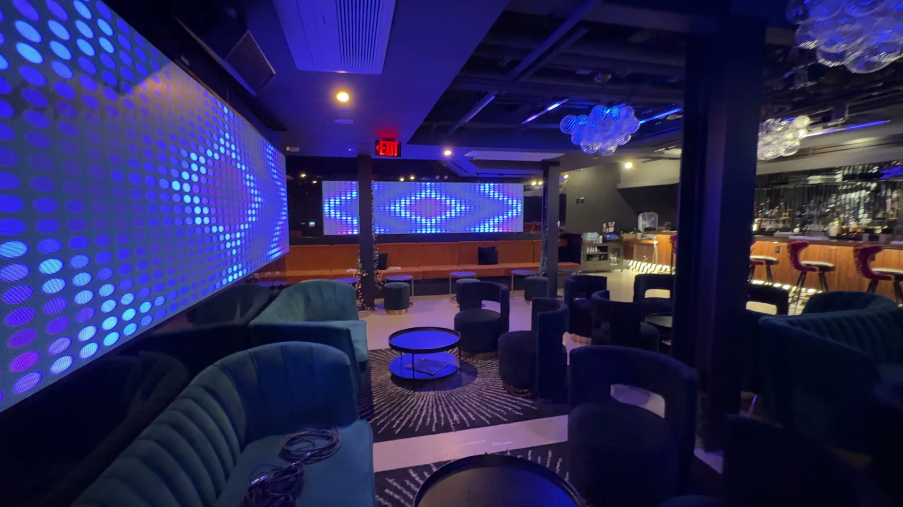
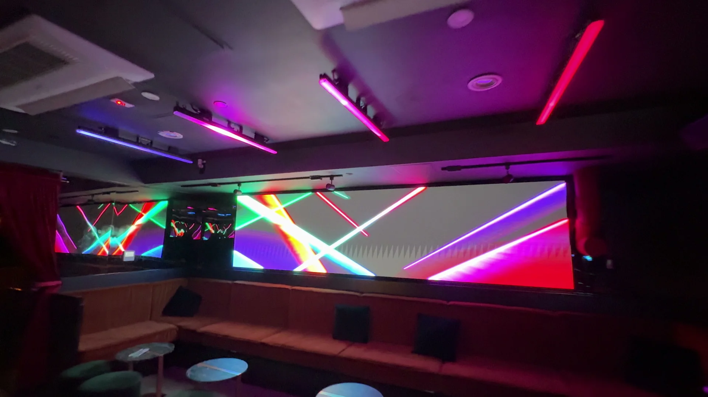
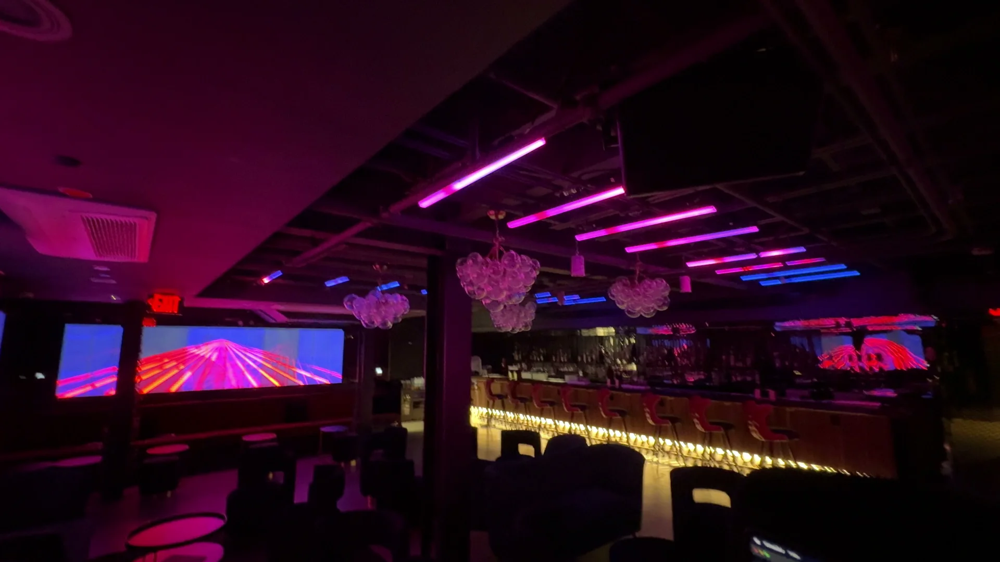
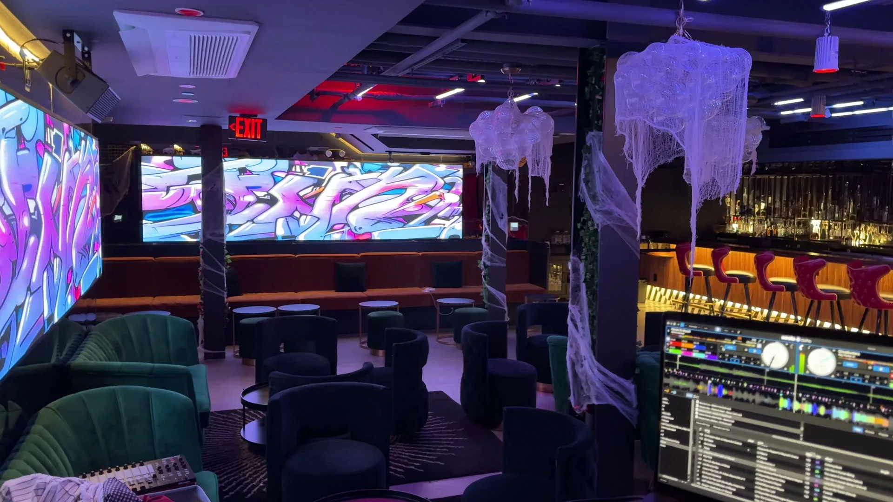
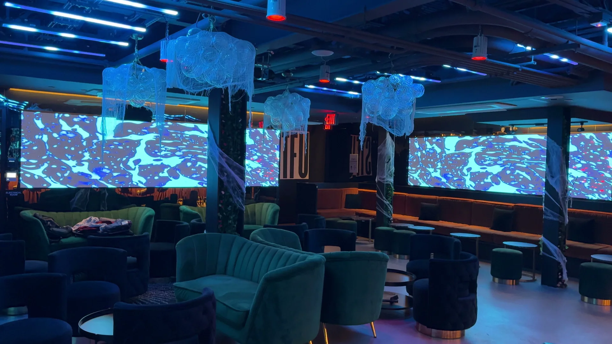
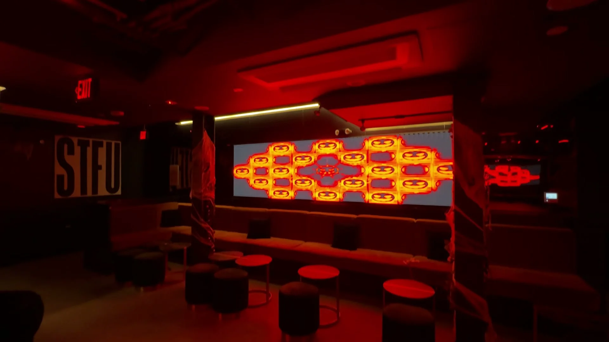
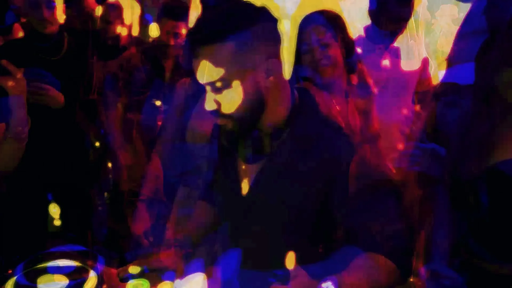
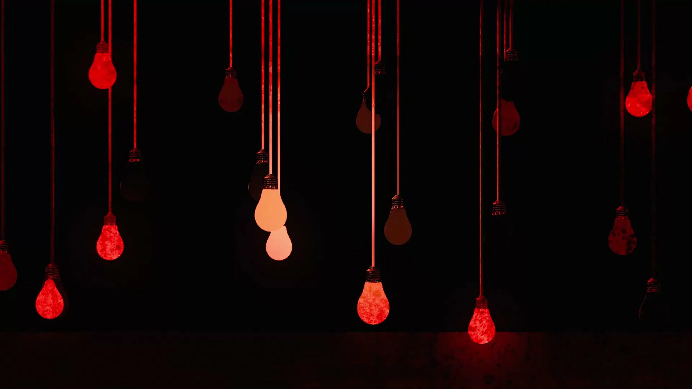
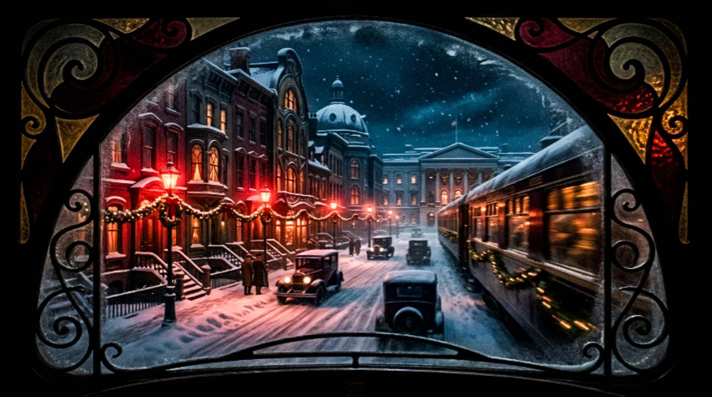
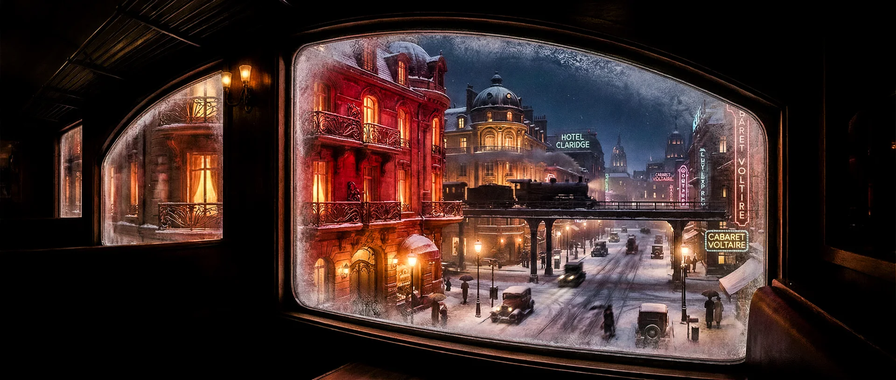
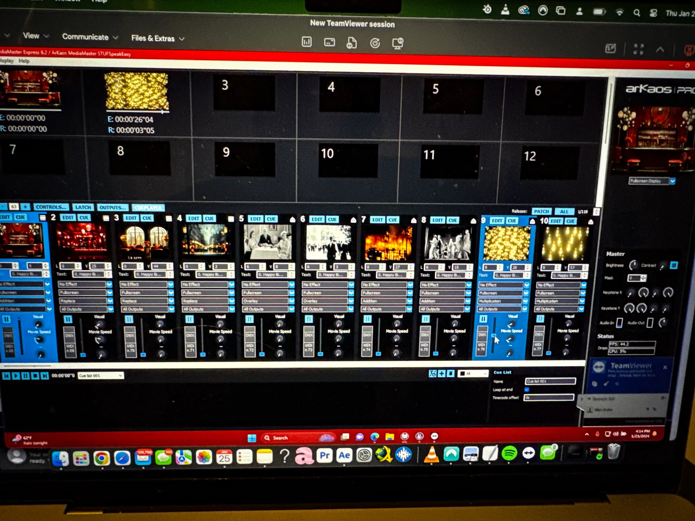
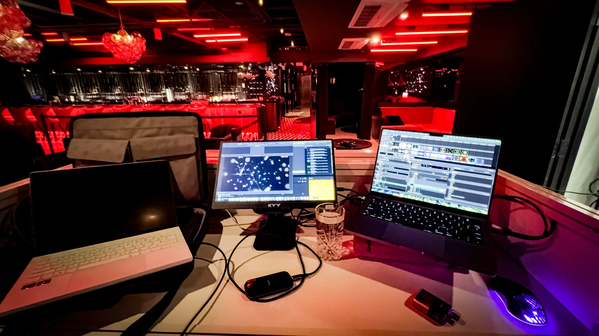
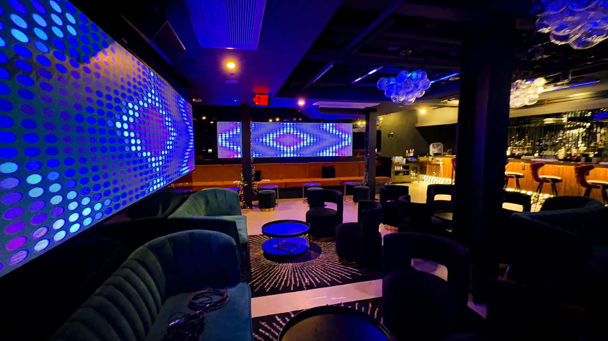
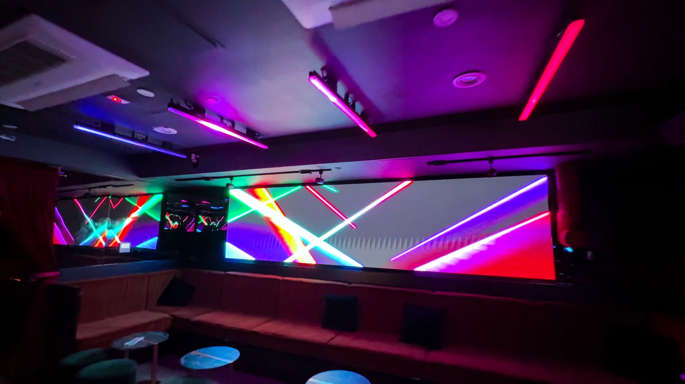
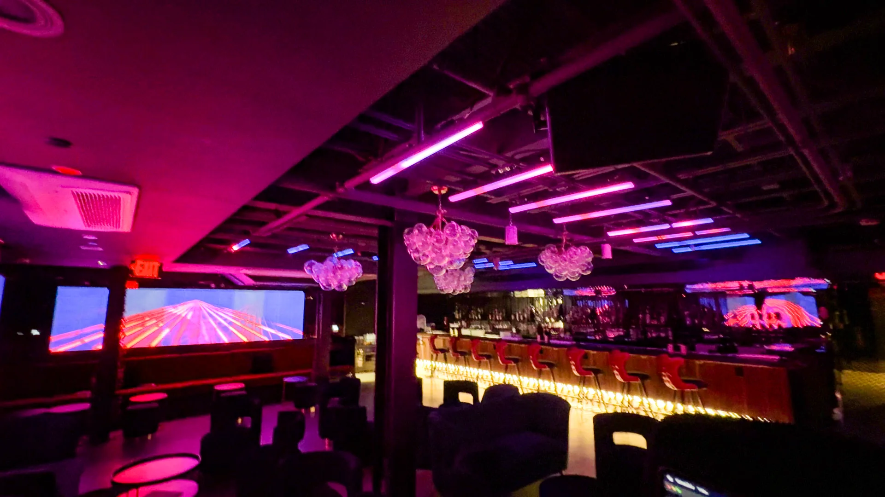